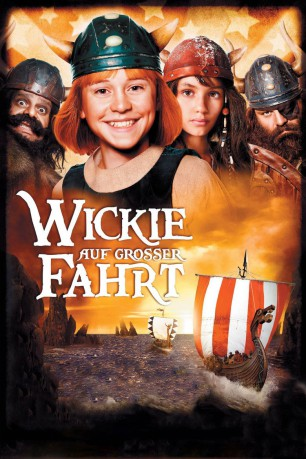

 
 IMDB-Wertung: 5.4 / 10
IMDB-Wertung: 5.4 / 10  Metascore:
Metascore: 
Halvar kann es kaum erwarten, bis aus seinem Sohn Wickie ein ebenso starker und mutiger Wikinger wie er selbst wird. Doch es scheint, als hätte Wickie noch einen langen Weg um dieses Ziel zu erreichen. Als der schreckliche Sven den Häuptling von Flake entführt, wird Wickie entsprechend den Regeln der Urväter zum stellvertretenden Häuptling erkoren. Nun liegt es an Wickie, die starken Männer zu befehligen und seinen Vater aus den Fängen des schrecklichen Sven zu befreien. Parallel dazu streben Halvar als auch Sven danach, den Hammer von Thor zu ergattern.
Jahr: 2011
Dauer: 96 Minuten
FSK: 0
Land: Deutschland Studio: Timeless FilmsTonspuren:
Untertitel:
Auflösung: 1080p (1920x816) Größe: 5365 MB
Genre: Action, Abenteuer, Komödie, Familie
Regisseur: Christian Ditter
Drehbuch: Christian Ditter, Runer Jonsson, Runer Jonsson, Neil Ennever, Simon Hauschild
Soundtrack: Jaro Messerschmidt, Nik Reich, Ralf Wengenmayr
Darsteller:
Datei: X:\Kinder Filme (N-Z)\Wickie auf großer Fahrt (2011, FSKo.Al., 1920x816) 3D.mkv seit 20.05.2015
Festplatte: Kinder-Filme+Trick
 Es gibt insgesamt 87 Filme in der Gruppe 'Kinder Filme (N-Z)'
Es gibt insgesamt 87 Filme in der Gruppe 'Kinder Filme (N-Z)'